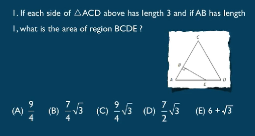
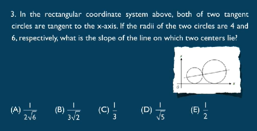

三角形内角和180 n边形 (n-2)*180
两边之和大于第三边，出一些不定项选择题
大边对大角。
勾股定理：3 4 5. 5 12 13. 7 24 25.
面积 area 周长 parameter/circumference 专指圆形
ans:B
单词说法：
equilateral triangle 等边三角形
isosceles triangle 等腰三角形
quadrilateral 四边形 quadruple 四倍的
平行四边形 parallelogram
菱形 diamond rhombus 四边相等的四边形
梯形 trapezoid
五边形 pentagon 当p大写 五角大楼
六边形 hexagon regular hexagon 正六边形
七边形 heptagon
八边形 octagon
九边形 nonagon
十边形 decagon
2.A ladder 25 feet long is leaning against a wall that is perpendicular to
level ground.The bottom of the ladder is 7 feet from the base of the
wall.If the top of the ladder slips down 4 feet,how many feet will the
bottom of the ladder slip?
(A)4
(B)5
(C)8
(D)9
(E)15
ans:C
一些单词：
right angle 直角
acute angle 锐角
obtuse angle 钝角
对于直角三角形 短边为勾 arm 长边为股 leg 长边为弦 hypotenuse
一般说两个legs side两点之间
面积area 周长circumference 直径diameter 半径radius
弦长 弧长arc 扇形面积 sector
同一段圆弧对应圆心角是圆周角的两倍
I.If the number of square units in the area of circle C is
twice the number of linear units in the circumference of
C,what is the number of square units in the area?
(A)4
(B)8
(C)4π
(D)8π
(E)16π
ans:C wrong
square units: 面积单位 linear units: 长度单位
ans:A
长方体：rectangular solids；
正方体：cubes；
圆柱：cylinder； cylindrical 圆锥cone路障 conic；
球形：sphere spherical
I.In a certain rectangular solid,the three sides have areas
12,15,and 20,respectively.What is the volume of the
solid?
(A)
60
(B)
120
(C)
450
(D)
1,800
(E)
3,600
ans:A sqrt 12 15 20
2.A grocer is storing small cereal boxes in large cartons that measure
25 inches by 42 inches by 60 inches.If the measurement of each small
cereal box is 7 inches by 6 inches by 5 inches,then what is the
maximum number of small cereal boxes that can be placed in each large
carton?
(A)25
(B)210
(C)252
(D)300
(E)420
guess:D 猜对了 尽可能让每个边整除
有可能单词：
长方体：6 面 faces；12棱 edges；8顶点 vertex/vertices
直线方程：
斜截式：y=kx+b k-slope,b-intercept
斜率：
互相垂直 斜率product=-1
I.In the rectangular coordinate system above,the line y =x is
perpendicular bisector of segment AB (not shown),and the x-axis is the
perpendicular bisector of segment BC(not shown).If the coordinates of
point A are (2,3),what are the coordinates of point C?
(A)(-3,-2)
(B)(-3,2)
(C)(2,-3)
(D)(3.-2)
(E)(2,3)
ans:bisector 平分线， 二等分 D
perpendicular bisector垂直平分线
2.In the rectangular coordinate system shown above,if the slope of line
k (not shown)is positive,which of the following statements must be
true?
▣The x-intercept of k is negative.
▣The y-intercept of k is positive.
▣k intersects the quadrant I.
▣k intersects the quadrant ll.
▣k intersects the quadrant Ill.
▣k intersects the quadrant IV.
ans:读不懂啊 intercept截距 一定穿过一三
ans:A